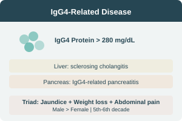

IgG4-Hepatopathy & IgG4-Related Sclerosing Cholangitis
Key Characteristics
- IgG4-related disease (IgG4-RD) affecting liver & bile ducts
- Commonly associated with IgG4-related pancreatitis
- More common in males, 5th–6th decade
- Presents with obstructive jaundice
- Weight loss & abdominal pain
HISORt Criteria
Diagnostic framework for IgG4-related sclerosing cholangitis integrating histology, imaging, serology, organ involvement, and response to therapy.
Clinical Presentation
- Obstructive jaundice
- Weight loss
- Abdominal pain
- May mimic cholangiocarcinoma
- Associated pancreatitis
IgG4 Level
Elevated IgG4 > 280 mg/dL
